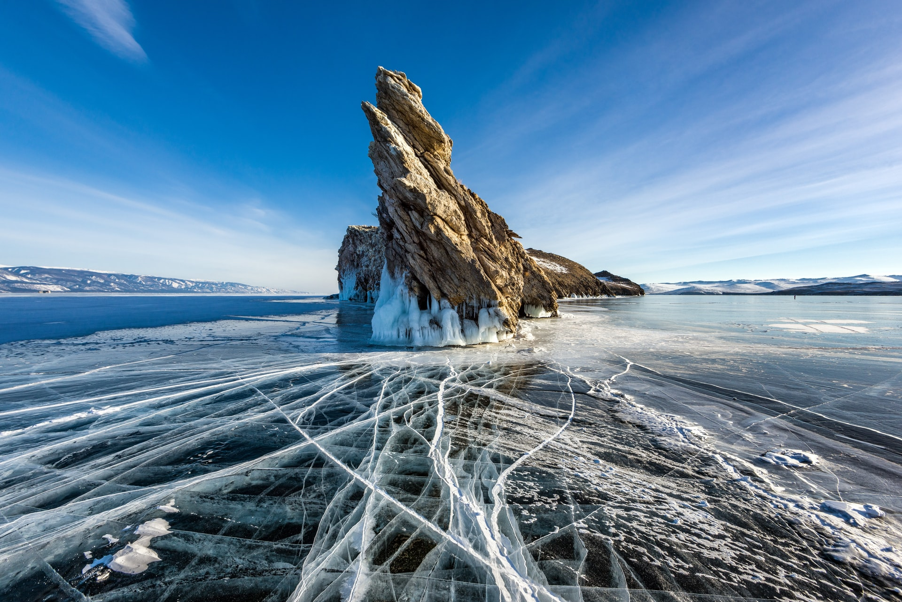
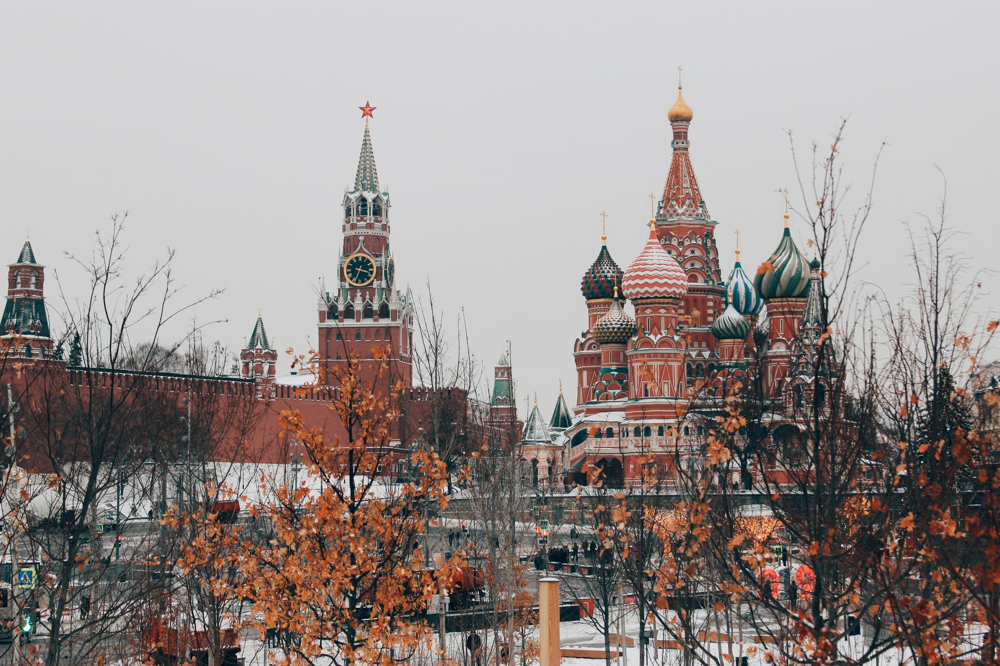
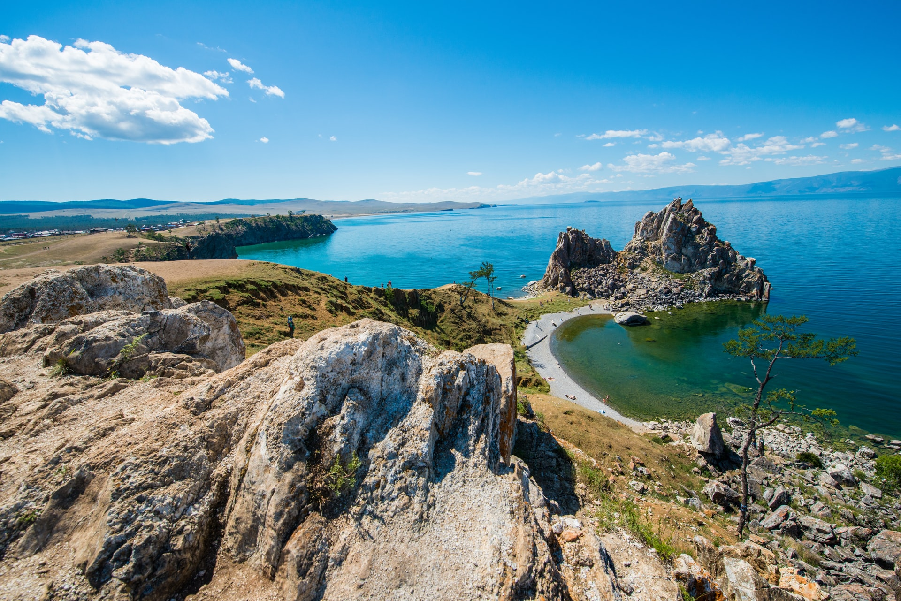

The political, scientific, historical, architectural and business centre of Russia, Moscow displays the country's contrasts at their most extreme. The ancient and modern exist side by side in this city of 10 million. Catch a metro from one of the ornate stations to see Red Square, the Kremlin, the nine domes of St Basil's Cathedral, Lenin's Mausoleum, the KGB Museum and other symbols of Moscow's great and terrible past, then lighten up and go shopping in Boulevard Ring, or people-watch in Pushkin Square.
The second largest city in Russia, St. Petersburg is the country’s cultural heart. View splendid architectural gems like the Winter Palace and the Kazan Cathedral, and give yourself plenty of time to browse the world-renowned art collection of the Hermitage. Sprawling across the Neva River delta, St. Petersburg offers enough art, nightlife, fine dining and cultural destinations for many repeat visits.
One of the world’s oldest geographical features (formed 25 to 30 million years ago), magnificent Lake Baikal (Озеро Байкал) is the highlight of Eastern Siberia. Summer travellers enjoy gobsmacking vistas across waters of the deepest blue to soaring mountain ranges on the opposite shore; rarer winter visitors marvel at its powder-white surface, frozen steel-hard and scored with ice roads.
Gateway to the optimistically named ‘Russian Riviera’, Sochi is a Black Sea resort with a lively boardwalk and glorious sunsets. In summer, coastline nightclubs pump out booming baselines from dusk till dawn. Away from the embankment, magnolia- and cypress-filled parks provide a fine setting for strolling. And just outside of town, the Agura Valley offers easily accessible hiking amid waterfalls and sublime views.